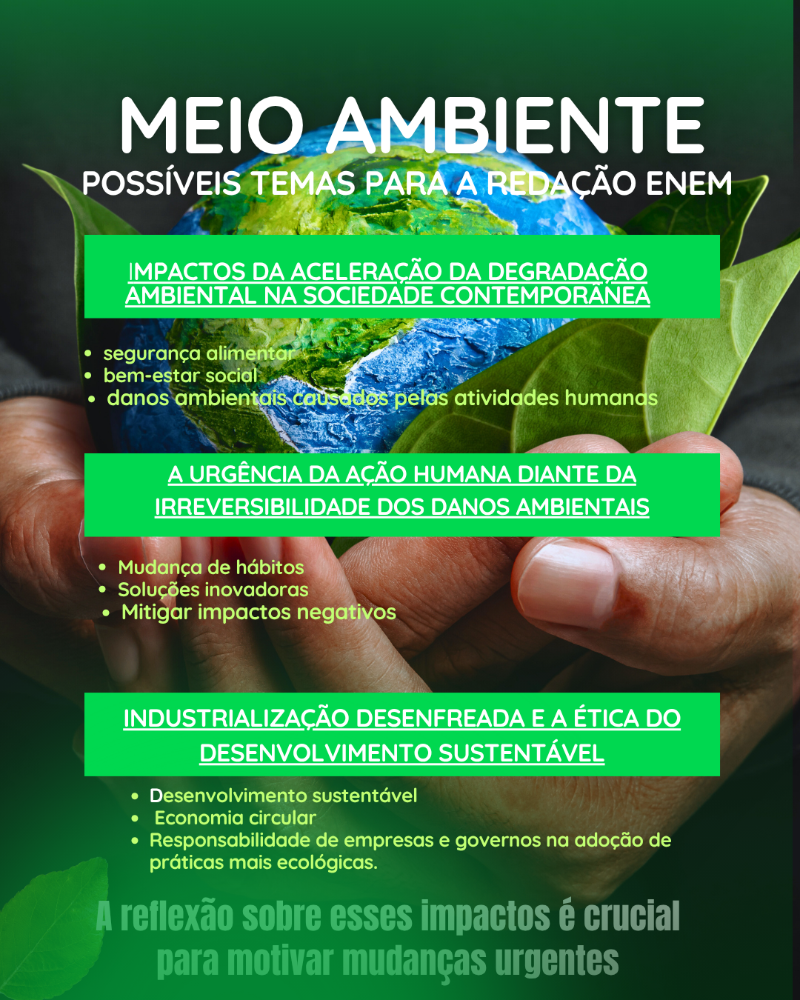

Meio Ambiente

1) Argumento de autoridade
A Organização das Nações Unidas, por meio de acordos internacionais como o Acordo de Paris, sustenta que a ação climática imediata é indispensável para limitar o aumento da temperatura global a 1,5 °C até o final do século.
A Organização das Nações Unidas, por meio de acordos internacionais como o Acordo de Paris, sustenta que a ação climática imediata é indispensável para limitar o aumento da temperatura global a 1,5 °C até o final do século.
2) Argumento histórico
Desde a Revolução Industrial, a humanidade intensificou a exploração de recursos naturais e o uso de combustíveis fósseis, o que marcou o início da aceleração do impacto ambiental. Esse processo histórico mostra que o desenvolvimento econômico tradicional sempre esteve atrelado à degradação ambiental, o que exige, hoje, uma ruptura com esse modelo.
Desde a Revolução Industrial, a humanidade intensificou a exploração de recursos naturais e o uso de combustíveis fósseis, o que marcou o início da aceleração do impacto ambiental. Esse processo histórico mostra que o desenvolvimento econômico tradicional sempre esteve atrelado à degradação ambiental, o que exige, hoje, uma ruptura com esse modelo.
3) Argumento de exemplificação
O derretimento das calotas polares, os incêndios florestais em larga escala — como os que atingem anualmente a Amazônia e a Califórnia —, além de inundações e secas extremas em diferentes continentes, são exemplos concretos dos efeitos das mudanças climáticas, com impactos diretos na saúde pública, na agricultura e na economia.
O derretimento das calotas polares, os incêndios florestais em larga escala — como os que atingem anualmente a Amazônia e a Califórnia —, além de inundações e secas extremas em diferentes continentes, são exemplos concretos dos efeitos das mudanças climáticas, com impactos diretos na saúde pública, na agricultura e na economia.
4) Argumento de comparação
Enquanto países como a Alemanha e a Dinamarca avançam na produção de energia limpa e na gestão eficiente de resíduos, outras nações ainda mantêm altos níveis de emissão de carbono e políticas ambientais frágeis. Essa disparidade revela a necessidade de um esforço global, mas também de adaptações locais mais comprometidas.
Enquanto países como a Alemanha e a Dinamarca avançam na produção de energia limpa e na gestão eficiente de resíduos, outras nações ainda mantêm altos níveis de emissão de carbono e políticas ambientais frágeis. Essa disparidade revela a necessidade de um esforço global, mas também de adaptações locais mais comprometidas.
5) Argumento de raciocínio lógico
O uso intensivo de combustíveis fósseis, o desmatamento e a poluição provocam desequilíbrios ecológicos severos. Como consequência, há perda de biodiversidade, elevação do nível do mar e ameaças à segurança alimentar. Sem intervenção imediata, esses efeitos tendem a se agravar, comprometendo o futuro das próximas gerações.
O uso intensivo de combustíveis fósseis, o desmatamento e a poluição provocam desequilíbrios ecológicos severos. Como consequência, há perda de biodiversidade, elevação do nível do mar e ameaças à segurança alimentar. Sem intervenção imediata, esses efeitos tendem a se agravar, comprometendo o futuro das próximas gerações.